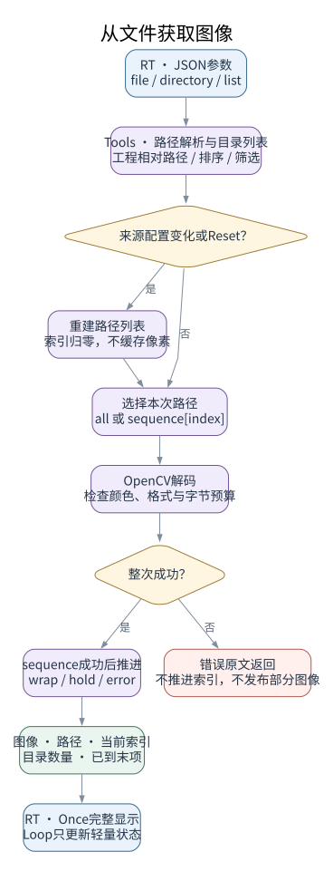
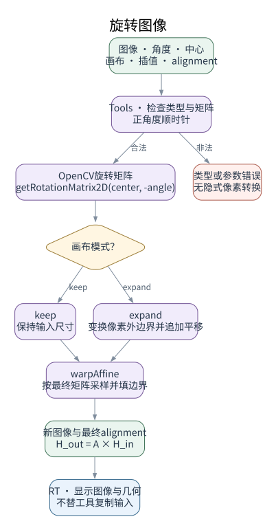
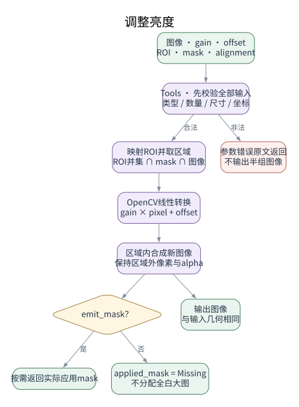
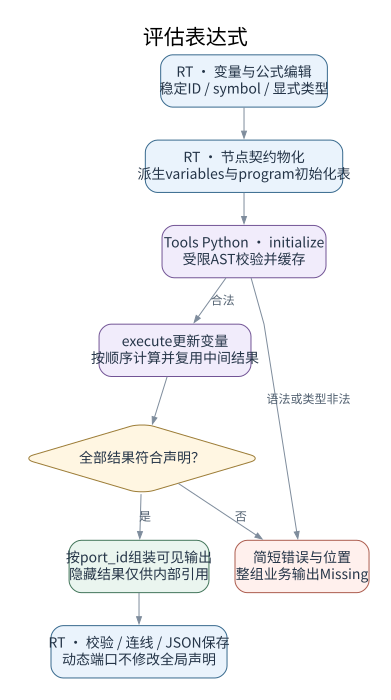
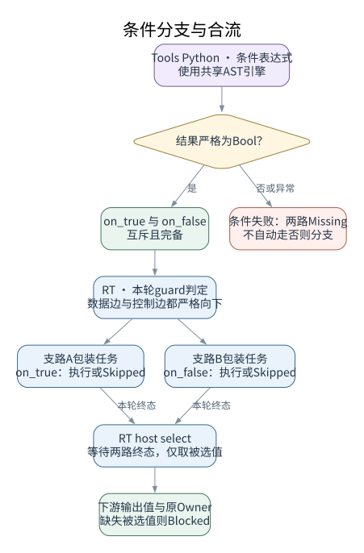
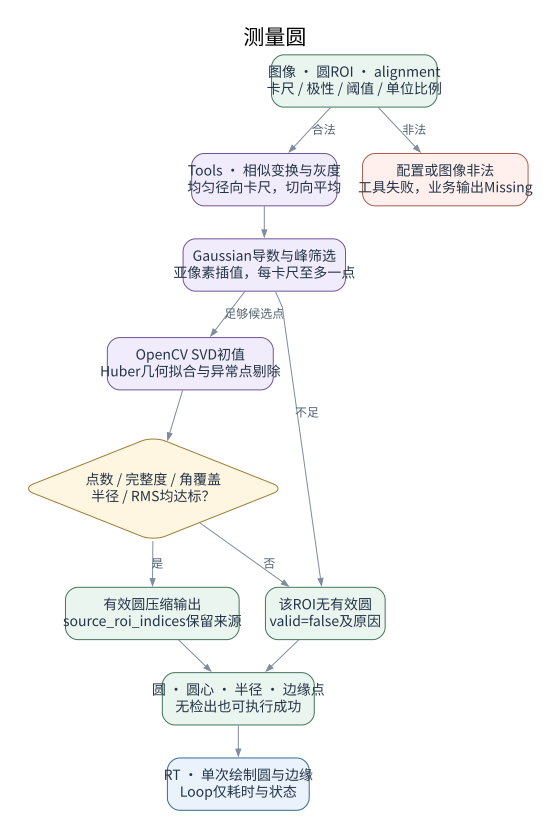
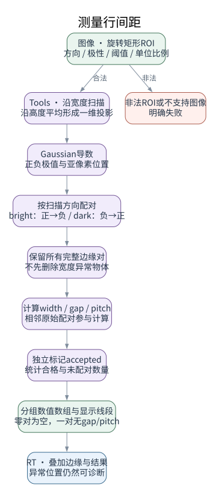
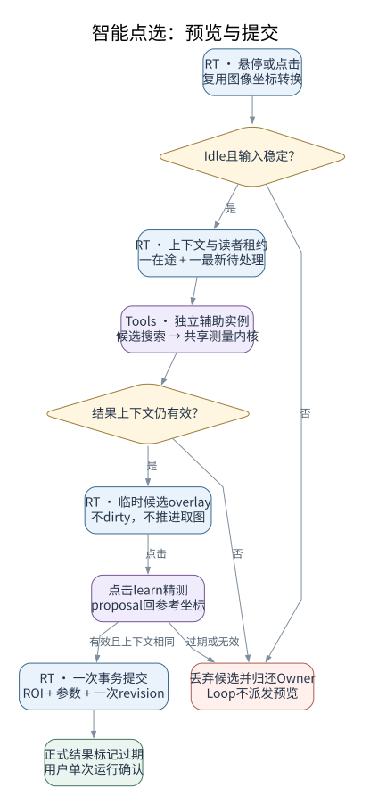

设计草案 · OpenCV与开源实现 · 不依赖HALCON
蓝：VisionRT 紫：VisionTools 绿：数据 金：判断 红：错误或作废
S-IMG-01

S-IMG-02

S-IMG-03

S-EXPR-01 / S-EXPR-02

S-BRANCH-01 / S-BRANCH-02

S-CIRCLE-01

S-ROWS-01

S-ASSIST-01 至 S-ASSIST-05
